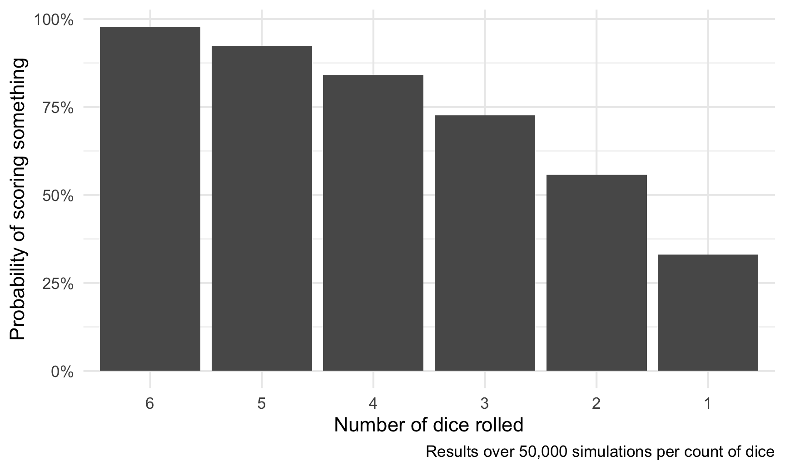

Zilch and simulations
Zilch!
Rules
Roll six dice. You must keep at least one scoring die every roll. You must get at least 500 points before stopping and keeping the total. If you do not get 500 points, you get zilch (0) that round and the next person rolls.
After reaching 500 points, you can either stop, write down, and keep your score or continue to roll. As long as you can keep at least one scoring die, you can continue to roll and accumulate points. If you do not get a scoring combination in a roll, you lose all those points.
If you score with all six dice, you can pick them all up and continue rolling with them.
Whoever reaches 10,000 points first wins.
Point system
| Roll | Points |
|---|---|
| Single dice | |
| 100 | |
| 50 | |
| Three of a kind (number × 100) | |
| 200 | |
| 300 | |
| 400 | |
| 500 | |
| 600 | |
| Special rolls | |
| 1,000 | |
| 2,000 | |
| Any three pairs e.g., |
1,000 |
| 5-die straight or |
1,750 |
Probability with math
You can use probability math to calculate the chance of rolling at least a 1 or a 5 (so that you score something and can roll again). If you’re only rolling 1 die, the chance of rolling a 1 or a 5 is \(\frac{2}{6}\), or \(\frac{1}{3}\). When you start thinking about 2 dice, though, the math gets a little trickier because you care about rolling at least a 1 or 5, and there’s a chance you could roll both. So instead, we can calculate the probability of not rolling a 1 or a 5 and then subtract that from 1.
With 2 dice, the probability of not rolling a 1 or a 5 is \(\frac{4}{6}\) or \(\frac{2}{3}\) for each die. To calculate the joint probability, we can multiply each die’s probability:
\[ \begin{aligned} 1 - (\frac{2}{3} \times \frac{2}{3}) &= \\ 1 - \frac{4}{9} &= 0.5\overline{55} \end{aligned} \]
That means there’s a 55% chance of rolling at least a 1 or a 5 when rolling 2 dice. This approach scales up to any number of dice—multiply that \(\frac{2}{3}\) for each die included. For instance, here’s 4 dice:
\[ \begin{aligned} 1 - (\frac{2}{3} \times \frac{2}{3} \times \frac{2}{3} \times \frac{2}{3}) &= \\ 1 - \frac{16}{81} &= 0.80 \end{aligned} \]
We can generalize this by using exponents, where \(n\) is the number of dice you’re rolling:
\[ 1 - \frac{2^n}{3^n}\quad \text{ or }\quad 1 - \left(\frac{2}{3}\right)^n \]
Probabilty with math and computers
Doing that math by hand gets tedious, so we can put it in an R function and have R do the math for us.
prob_1_or_5 <- function(n) {
1 - (2/3)^n
}
# 1 die
prob_1_or_5(1)
## [1] 0.3333
# 5 dice
prob_1_or_5(5)
## [1] 0.8683
# 6 dice
prob_1_or_5(6)
## [1] 0.9122Probability with computers only
Instead of figuring out the math behind the probability of getting at least a 1 or a 5, we can simulate a bunch of dice rolls and brute force our way to the answer. Here’s the general process:
- Roll 6 dice 100,000 times (or whatever number you want)
- Count how many times a 1 or a 5 appears in a roll
- Divide that count by 100,000. That’s the probability.
Probably the most intiuitive (though not necessarily computationally efficient) way to do with with R is to use a for loop. In R, a for loop will will repeat some chunk of repeatedly until some condition is met, and that condition is generally tracked with an index variable that is specific to the inside of the loop. For instance, this loop uses an index variable named i. It will set i to 1 the first time it runs the loop and then do whatever’s inside (print(...) in this case). When it finishes the inside code, it’ll bump i up to the next number (2 here) and run the inside code again, and again, and again until it reaches the end of the index range (4 here):
for (i in 1:4) {
print(paste("Loop number", i))
}
## [1] "Loop number 1"
## [1] "Loop number 2"
## [1] "Loop number 3"
## [1] "Loop number 4"To make this work with our dice simulation, we need to add one more component. We want to store the results of each loop run in a variable that we can use later. The most efficient way to do this is to create an empty variable first that has enough slots in it to contain the output, then add to that variable while going through the loop:
# This is "logical" because it's only going to hold TRUE and FALSE values. If we
# wanted to put numbers in it, we'd need to use "double"; if we wanted to put
# text in it, we'd need to use "character"
output <- vector("logical", 4)
for (i in 1:4) {
# Check if i is 3 and store the result in the ith slot
output[[i]] <- i == 3
}
output
## [1] FALSE FALSE TRUE FALSELet’s build a loop now that rolls 6 dice, checks for a 1 or a 5, and stores the result. We’ll use 100,000 times for fun.
# Create empty variable with enough slots
has_1_or_5 <- vector("logical", 100000)
# Roll a bunch of dice a bunch of times
for (i in 1:100000) {
# Roll some dice
rolled_dice <- sample(1:6, 6, replace = TRUE)
# Check if there's a 1 or a 5 in there
did_it_happen <- 1 %in% rolled_dice | 5 %in% rolled_dice
# Store the result
has_1_or_5[i] <- did_it_happen
}
# Find the proportion of TRUEs
sum(has_1_or_5) / 100000
## [1] 0.9122Out of the 100,000 rolls, 91,220 of them had a 1 or a 5 in them, meaning that there’s a 91.22% chance of scoring something on an initial roll in Zilch.
How does that compare to the official math?
\[ 1 - \left( \frac{2}{3} \right)^6 \]
prob_1_or_5(6)
## [1] 0.9122It’s basically the same! But we found the answer without doing any actual probability math, which is neat.
We can generalize this simulation a little more by not hardcoding some of the parameters. We can make it so both the number of dice to roll and the number of simulations are adjustable by sticking this in a function. For example, here’s 4 dice 50,000 times:
simulate_zilch <- function(n_dice, n_sims) {
# Create empty variable with enough slots
has_1_or_5 <- vector("logical", n_sims)
# Roll a bunch of dice a bunch of times
for (i in 1:n_sims) {
# Roll some dice
rolled_dice <- sample(1:6, n_dice, replace = TRUE)
# Check if there's a 1 or a 5 in there
did_it_happen <- 1 %in% rolled_dice | 5 %in% rolled_dice
# Store the result
has_1_or_5[i] <- did_it_happen
}
# Find the proportion of TRUEs
sum(has_1_or_5) / n_sims
}
simulate_zilch(n_dice = 4, n_sims = 50000)
## [1] 0.8027Why even do this?
But we know the probability equation for getting at least a 1 or a 5, so why go through the hassle of making the computer roll millions of dice? Because we’re not actually calculating the true probability of scoring every valid scoring combination!
In Zilch, you can score with at least a 1 or a 5, but you can also score with three-of-a-kind or three pairs or a 5-die straight. We could calculate the probability of rolling those and combine them with the probability of a 1 or a 5, but the formal equation will get really hairy and complicated. So instead, we can simulate.
simulate_zilch_full <- function(n_dice, n_sims) {
# Create empty variable with enough slots
did_something_score <- vector("logical", n_sims)
# Roll a bunch of dice a bunch of times
for (i in 1:n_sims) {
# Roll some dice
rolled_dice <- sample(1:6, n_dice, replace = TRUE)
# Check for 3 pairs separately since it's a complicated process
# If there are three different numbers...
if (length(table(rolled_dice)) == 3) {
# ...check if there are 3 pairs
three_pairs <- all(table(rolled_dice) == c(2, 2, 2))
} else {
three_pairs <- FALSE
}
# Check if there's a scoring combination in there
did_it_happen <- 1 %in% rolled_dice | # A 1
5 %in% rolled_dice | # A 5
all(1:5 %in% rolled_dice) | # A 1-5 straight
all(2:6 %in% rolled_dice) | # A 2-6 straight
max(table(rolled_dice)) >= 3 | # At least 3 of one number
three_pairs # 3 pairs
# Store the result
did_something_score[i] <- did_it_happen
}
# Find the proportion of TRUEs
sum(did_something_score) / n_sims
}
six_dice <- simulate_zilch_full(6, 50000)Phew! Now that we account for every possible scoring combination, there’s a 97.69% chance of scoring something when rolling 6 dice. That’s really high!
For fun, let’s look at how that probability changes as the number of dice you roll decreases:
library(tidyverse)
# hoooo boy this is slow
number_of_dice <- tibble(n_dice = 6:1) %>%
mutate(prob = map_dbl(n_dice, ~simulate_zilch_full(., 50000)))ggplot(number_of_dice, aes(x = fct_rev(factor(n_dice)), y = prob)) +
geom_col() +
scale_y_continuous(labels = percent_format(accuracy = 1)) +
labs(x = "Number of dice rolled", y = "Probability of scoring something",
caption = "Results over 50,000 simulations per count of dice") +
theme_minimal()